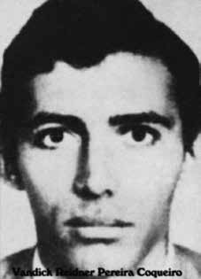

Vandick
Reidner
Pereira
Coqueiro
CIRCUNSTÂNCIAS DA MORTE
Vandick Reidner Pereira Coqueiro foi visto por seus companheiros pela última vez pouco antes do episódio conhecido como o “Chafurdo de Natal”, um ataque feito ao acampamento da Comissão Militar da Guerrilha, em 25 de dezembro de 1973. Segundo o Relatório Arroyo, Vandick e Dinaelza deveriam chegar em 28 de dezembro de 1973 a um ponto de encontro pré-estabelecido, próximo ao local onde acontecera a ataque ao acampamento da Comissão Militar da Guerrilha. De acordo com Arroyo, os dois não compareceram à localidade. O último registro do guerrilheiro com vida indica que, em 17 de novembro de 1973, ele esteve nas proximidades de um local onde houvera o tiroteio no qual estiveram envolvidos Elmo Corrêa, Antonio Teodoro de Castro e Micheás Gomes de Almeida. No Relatório da Marinha, de 1993, há apenas a indicação de que Vandick foi morto em 17 de janeiro de 1974. O morador da região Pedro Vicente Ferreira, ou Pedro Zuza, que serviu ao Exército como guia, declarou ao Ministério Público Federal, em 7 de julho de 2001, que perseguia os guerrilheiros na região do Embaubal procurando Oswaldão e seus companheiros e que havia matado Amaury (Paulo Roberto Pereira Marques) e João ou Zé Goiano (Vandick Reidner Pereira Coqueiro)iv, sem, contudo, precisar a data do evento.
Vandick Reidner Pereira Coqueiro was last seen by his companions shortly before the episode known as the “Christmas Wallow”, an attack on the Military Guerrilla Commission camp, on December 25, 1973. According to the Arroyo Report, Vandick and Dinaelza were supposed to arrive on December 28, 1973 at a pre-established meeting point, close to the place where the attack on the Military Guerrilla Commission camp had taken place. According to Arroyo, the two did not appear at the location. The last record of the guerrilla alive indicates that, on November 17, 1973, he was close to a place where there had been a shootout in which Elmo Corrêa, Antonio Teodoro de Castro and Micheás Gomes de Almeida were involved. In the 1993 Navy Report, there is only an indication that Vandick was killed on January 17, 1974. The resident of the region Pedro Vicente Ferreira, or Pedro Zuza, who served the Army as a guide, declared to the Federal Public Ministry, on July 7, 2001, that he was chasing the guerrillas in the Embaubal region looking for Oswaldão and his companions and that he had killed Amaury (Paulo Roberto Pereira Marques) and João or Zé Goiano (Vandick Reidner Pereira Coqueiro)iv, without, however, specifying the date of the event.
Vandick Reidner Pereira Coqueiro fue visto por última vez por sus compañeros poco antes del episodio conocido como el “Revolcadero de Navidad”, un ataque al campamento de la Comisión Guerrillera Militar, el 25 de diciembre de 1973. Según el Informe Arroyo, Vandick y Dinaelza debían llegar el 28 de diciembre de 1973 a un punto de encuentro preestablecido, cercano al lugar donde se había producido el ataque al campamento de la Comisión Guerrillera Militar. Según Arroyo, los dos no se presentaron en el lugar. El último registro con vida del guerrillero indica que, el 17 de noviembre de 1973, se encontraba cerca de un lugar donde se había producido un tiroteo en el que estaban involucrados Elmo Corrêa, Antonio Teodoro de Castro y Micheás Gomes de Almeida. En el Informe de la Marina de 1993, sólo hay indicios de que Vandick fue asesinado el 17 de enero de 1974. El vecino de la región Pedro Vicente Ferreira, o Pedro Zuza, que sirvió como guía del Ejército, declaró al Ministerio Público Federal, el 7 de julio de 2001, que perseguía a los guerrilleros en la región de Embaubal en busca de Oswaldão y sus compañeros y que había matado a Amaury (Paulo Roberto Pereira Marques) y João o Zé Goiano (Vandick Reidner Pereira Coqueiro)iv, sin precisar, sin embargo, la fecha del hecho.